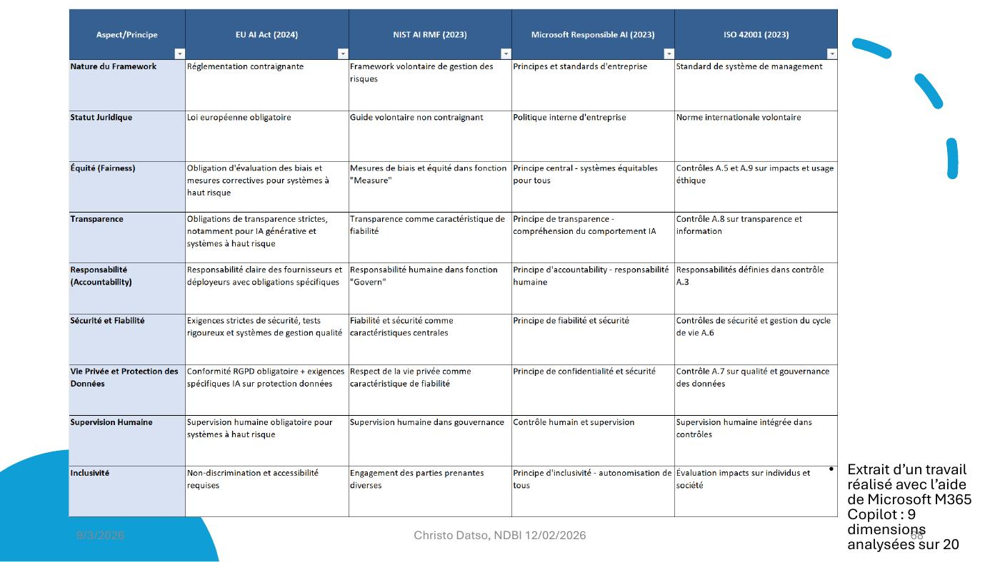

DIAPOSITIVES 67 et 68
Les textes qui font foi, et ce qu’ils valent les uns par rapport aux autres.
Règlement (UE) 2024/1689 du 13 juin 2024 — « établissant des règles harmonisées concernant l’intelligence artificielle », entré en vigueur le 2 février 2025 après plusieurs années d’élaboration. Index : EUR-Lex — (UE) 2024/1689.
Proposition de règlement du 19 novembre 2025 modifiant le règlement 2024/1689 et d’autres, « en ce qui concerne la simplification de la mise en œuvre des règles harmonisées » — le train de mesures omnibus numérique sur l’IA. Index : EUR-Lex — 52025PC0836. Sont concernés, entre autres : le RGPD, l’AI Act, le Data Act et la directive ePrivacy.
Le second texte est le fait marquant, et l’exposé le pose sans commentaire : neuf mois après l’entrée en vigueur du règlement, la Commission propose déjà d’en simplifier la mise en œuvre. C’est la contrepartie institutionnelle de la pression décrite en fiche 7.

| Aspect / principe | EU AI Act (2024) | NIST AI RMF (2023) | Microsoft Responsible AI (2023) | ISO 42001 (2023) |
|---|---|---|---|---|
| Nature du cadre | Réglementation contraignante | Cadre volontaire de gestion des risques | Principes et standards d’entreprise | Standard de système de management |
| Statut juridique | Loi européenne obligatoire | Guide volontaire non contraignant | Politique interne d’entreprise | Norme internationale volontaire |
| Équité | Obligation d’évaluation des biais et mesures correctives pour les systèmes à haut risque | Mesures de biais et équité dans la fonction « Measure » | Principe central : systèmes équitables pour tous | Contrôles A.5 et A.9 sur impacts et usage éthique |
| Transparence | Obligations strictes, notamment pour l’IA générative et les systèmes à haut risque | Transparence comme caractéristique de fiabilité | Principe de transparence : compréhension du comportement de l’IA | Contrôle A.8 sur transparence et information |
| Responsabilité | Responsabilité claire des fournisseurs et déployeurs, avec obligations spécifiques | Responsabilité humaine dans la fonction « Govern » | Principe d’accountability : responsabilité humaine | Responsabilités définies dans le contrôle A.3 |
| Sécurité et fiabilité | Exigences strictes de sécurité, tests rigoureux et systèmes de gestion qualité | Fiabilité et sécurité comme caractéristiques centrales | Principe de fiabilité et de sécurité | Contrôles de sécurité et gestion du cycle de vie A.6 |
| Vie privée et protection des données | Conformité RGPD obligatoire, plus exigences spécifiques à l’IA sur la protection des données | Respect de la vie privée comme caractéristique de fiabilité | Principe de confidentialité et de sécurité | Contrôle A.7 sur qualité et gouvernance des données |
| Supervision humaine | Supervision humaine obligatoire pour les systèmes à haut risque | Supervision humaine dans la gouvernance | Contrôle humain et supervision | Supervision humaine intégrée dans les contrôles |
| Inclusivité | Non-discrimination et accessibilité requises | Engagement des parties prenantes diverses | Principe d’inclusivité : autonomisation de tous | Évaluation des impacts sur individus et société |
Ce que la comparaison rend visible, et qui n’est écrit nulle part : les quatre cadres disent à peu près la même chose. La différence tient à une seule ligne, la deuxième : un seul est obligatoire. Les trois autres sont des engagements volontaires — dont un est une politique interne d’entreprise.
C’est, sur le terrain de la gouvernance, la réponse à la question de la fiche 4 : le contenu éthique fait consensus, seule la force contraignante est en jeu — et elle est politique.